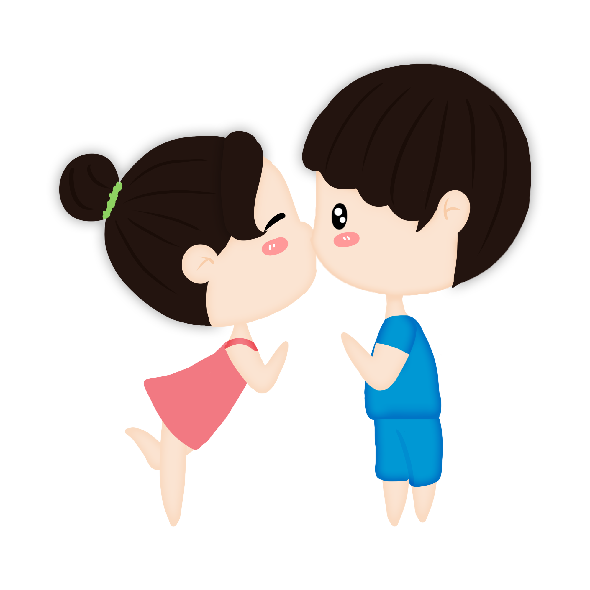

<body>
  
 <h1>Amo te ouvir <br> falando de
  <br>  como <br> foi teu dia</h1>
  <h2>fico esperando o dia todo pra saber como foi teu dia ou que tu fez ou, quando to contigo, te ouvir falando sobre o que aconteceu contigo</h2>

  <a href="Motivo 2.html">
  <div class="coracao">
    <div class="quadrado"></div>
    <div class="bola cima"></div>
    <div class="bola baixo"></div>
  </div>
  </a>
   
</body>
<style>
body{
  background-color: black;
  
}
  h1{
    color: white;
    font-family: Cursive;
    font-size: 60px;
    margin-right: 0px;
    margin-left: 30%;
    margin-top: 10%;
    text-align: center;
  }
  
  h2{
    color: white;
    font-family: cursive;
    font-size: 40px;
    text-align: center;
  }
   .coracao{
    position: relative;
    width: 200px;
    height: 200px;
    background: white;
    animation: pulse 1s infinite alternate;
    margin: 30% 30% 40% 40%;
    box-shadow: antiquewhite;
  }
  
  .quadrado{
    width: 200px;
    height: 200px;
    position: absolute;
    top: 0;
    left: 0;
    background: white;
  }
  
  .bola{
    width: 200px;
    height: 200px;
    border-radius: 50%;
    position: absolute;
    background: white;
  }
  
  .cima{
    top: 100px;
  }
  
  .baixo{
    left: 100px;
  }
  
  img{
    height: 300px;
    position: absolute;
    margin: 0px;
  }
  
  
  @keyframes pulse{
    0%{transform: scale(0.9) rotate(-135deg);}
    100%{transform: scale(1.1) rotate(-135deg);}
  }
</style>